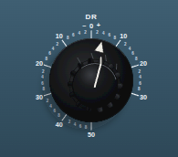

01 / Surface Materials & Knob Finish Palette
Click any swatch to copy hex token02 / DR Knob Construction & Dial Markings
Asymmetric logarithmic range (–50 dB to +30 dB)Scale Nomenclature & Angular Range
Knob Mechanical Anatomy
Arrowhead
Crisp Skirt IndexScalloped Rim
18 Tactile FlutesRaised Crown
Specular CapDial Scale
–50dB to +30dB03 / Modular Faceplate Architecture — Hero Central Knob Placement
Click and drag knob vertically or around center to rotate • Real-time telemetry readoutsWBS M466-DR
Dynamic Range Controller • Centered Large DR Knob
Live Rotary Telemetry
Interactive angular positioning and mathematical decibel calibration.

DR heading, and − 0 + asymmetric scale.
04 / Industrial Design & Knob Layout Conventions
Engineering specifications for Ward-Beck console dynamics modules1. Central Hero Prominence
The primary dynamic range (DR) control occupies the geometric center of the faceplate (y = 255px, outer radius 64px). Sizing it larger than surrounding trimmer pots provides an unmistakable tactile anchor for live broadcast operators without looking away from monitors.
2. Asymmetrical Logarithmic Taper
The rotary potentiometer features an asymmetrical scale: –50 dB to 0 dB across a 180° counter-clockwise span (for deep compression & attenuation) and 0 dB to +30 dB across a 105° clockwise span (for punchy makeup & expansion boost).
3. High-Contrast Arrowhead Indexing
Rather than a recessed needle slot, the DR control pairs a central radial stripe on the cap with a raised triangular arrowhead on the fluted skirt, ensuring parallax-free reading under sharp overhead studio lighting.
05 / CSS Design Tokens & SVG Component Specs
Ready-to-use tokens for WBS web simulators and audio plugins:root {
/* Ward-Beck Systems DR Module Surfaces */
--wbs-dr-slate-blue: #3E5E71;
--wbs-dr-slate-dark: #2D4554;
--wbs-dr-slate-light: #527991;
/* Collet Knob Bakelite & Knurled Body */
--wbs-knob-body: #151619;
--wbs-knob-crown: #26282F;
--wbs-knob-shadow: #0D0E10;
--wbs-knob-pointer: #F5F7FA;
/* Typography & Scale Markings */
--wbs-scale-label: #FFFFFF;
--wbs-scale-tick-maj: #FFFFFF;
--wbs-scale-tick-min: rgba(255, 255, 255, 0.75);
/* Rotary Sweep Physics */
--wbs-dr-min-deg: -180deg; /* -50 dB @ 6 o'clock */
--wbs-dr-zero-deg: 0deg; /* 0 dB @ 12 o'clock */
--wbs-dr-max-deg: +105deg; /* +30 dB @ 4:30 o'clock */
}